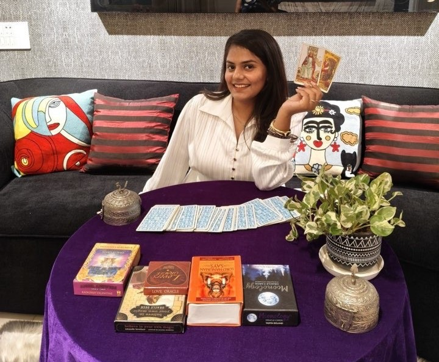

02 / testimonial
Clarity for the
next chapter.
Hi, I’m Prakriti.
✦ Intuitive guidance, grounded in reflection
PrakritiTarot reader & numerologist
Pause.
Listen inward.
Listen inward.
◌ Your clarity
is closer than it feels.
is closer than it feels.
Scroll to explore

withcare& curiosity
About Me
Hi, I’m Prakriti, a 21-year-old Tarot Reader and Teacher from Amritsar. I have been practising Tarot for the past 4 years and have worked with platforms like AstroTalk and Bodhi. I have guided 10,000+ people through Tarot, helping them find clarity, direction and emotional healing. My goal is to support and guide people who are seeking answers, reassurance, or a clearer path in life. I believe Tarot can be a powerful tool for self-reflection, guidance and personal growth.
There is no script for your life, and no single right answer. Together, we make room for a more honest conversation with yourself.
Know more about me ↗Ways to work together
How I can help you?
Come with a question. Leave with a little more room to move.
Kind words, held close
Stories of clarity
Take a moment with what others have discovered in their sessions.
01 / 03
A quiet place to begin
Let’s connect.
Bring the question you’ve been carrying. We’ll make room for a thoughtful next step.
✦
Meaningful questions
are always welcome.